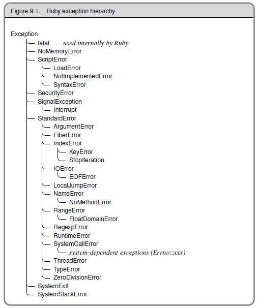

Tutorial de Ruby do GURU-SP
Exceções
Lançando uma Exceção
Uma exceção é um tipo especial de objeto, uma instância da classe Exception ou uma descendente dessa classe que representa um tipo de condição incomum; ela indica que algo de errado aconteceu. Quando isso ocorre, uma exceção é levantada (ou lançada). Por padrão, os programas Ruby terminam quando uma exceção ocorre. Mas é possível declarar tratadores de exceção. Um tratador (handler) de exceção é um bloco de código que é executado se uma exceção ocorre durante a execução de algum outro bloco de código. Levantar uma exceção significa parar a execução normal do programa e transferir o fluxo de controle para o código tratador da exceção onde você pode ou lidar com o problema que foi encontrado ou sair completamente do programa. O que irá acontecer – lidar com o problema ou abortar o programa – depende do que você forneceu um comando de resgate (rescue, que é uma parte fundamental da linguagem Ruby). Se você não forneceu este comando, o programa termina; se você forneceu, o fluxo de controle é passado ao comando rescue.
O Ruby tem algumas classes pré-definidas – Exceptions e suas filhas – que lhe ajudam a lidar com erros que ocorrem em seu programa. A figura a seguir mostra a hierarquia das exceções em Ruby.

Referência: A figura acima é do livro Programming Ruby.
O gráfico acima mostra que a maioria das subclasses estendem uma classe conhecida como StandardError (erro padrão). Estas são as exceções “normais” que os programas Ruby tipicamente tentam tratar. As outras exceções representam condições de mais baixo nível, mais sérias ou com condições menos recuperáveis, e programas normais Ruby normalmente não tentam tratá-las.
O seguinte método lança uma exceção sempre que é chamado. Sua segunda mensagem nunca será impressa. Programa p043raise.rb.
1 # p043raise.rb 2 def levanta_excecao 3 puts 'Estou antes do raise.' 4 raise 'Um erro ocorreu' 5 puts 'Estou depois do raise' 6 end 7 levanta_excecao
A saída é:
1 >ruby p043raise.rb 2 Estou antes do raise. 3 p043raise.rb:4:in `levanta_excecao': Um erro ocorreu (RuntimeError) 4 from p043raise.rb:7 5 >Exit code: 1
O método raise é do módulo Kernel. Por padrão, raise cria uma exceção da classe RuntimeError. Para levantar a exceção de uma classe específica, você pode passar o nome da classe como argumento para raise. Refira-se ao programa p044inverse.rb
1 # p044inverse.rb 2 def inverte(x) 3 raise ArgumentError, 'O argumento não é numérico' unless x.is_a? Numeric 4 1.0 / x 5 end 6 puts inverte(2) 7 puts inverte('não é um número')
A saída é:
1 >ruby p044inverse.rb 2 0.5 3 p044inverse.rb:3:in `inverte': O argumento não é numérico (ArgumentError) 4 from p044inverse.rb:7 5 >Exit code: 1
Lembre-se, métodos que agem como perguntas são geralmente nomeados com um sinal de interrogação no final. is_a? é um método na classe Objeto e retorna verdadeiro ou falso. O modificador unless quando colocado no final de uma expressão significa executa a expressão antecedente ao menos que a condição seja verdadeira (ou seja, somente se ele não for verdadeira).
Definindo novas classes de exceção: Para ser ainda mais específicio sobre um erro, você pode definir sua própria subclasse de exceção:
1 class NotInvertibleError < StandardError 2 end
Tratando uma Exceção
Para fazer o tratamento da exceção, nós colocamos o código que pode lançar uma exceção dentro de um bloco begin-end e usamos uma ou mais cláusulas rescue pra contar ao RUby os tipos de exceção que queremos tratar. É importante notar que o corpo de definição de um método é um bloco begin-end implícito; o begin é omitido, e todo o corpo do método está sujeito ao tratamento de exceção, terminando com o end do método.
O programa p**045handexcp.rb** ilustra isso:
1 # p045handexcp.rb 2 def levanta_e_resgata 3 begin 4 puts 'Estou antes do raise.' 5 raise 'Um erro ocorreu' 6 puts 'Estou depois do raise' 7 rescue 8 puts 'Fui resgatado.' 9 end 10 puts 'Estou depois do bloco begin.' 11 end 12 levanta_e_resgata
A saída é:
1 >ruby p045handexcp.rb 2 Estou antes do raise. 3 Fui resgatado. 4 Estou depois do bloco begin. 5 >Exit code: 0
Observe que o o código interrompido pela exceção nunca é executado. Uma vez que a exceção é tratada, a execução continua imediatamente depois do bloco begin que a a gerou.
Se você escreve uma cláusula rescue sem nenhum parâmetro, o parâmetro será ajustado por padrão para StandardError. cada cláusula rescue pode especificar múltiplas exceções para serem capturadas. No fim de cada comando rescue pode também ser expressões arbitrárias (incluindo chamadas a métodos) que retornam uma classe do tipo Exception. Se usarmos raise sem parâmetros, ele relançará a exceção.
Você pode empilhar cláusulas de rescue em um bloco begin/rescue. Exceções não tratadas por uma cláusula rescue serão passadas para a próxima:
1 begin 2 # - 3 rescue UmTipoDeExcecao 4 # - 5 rescue OutroTipoDeExcecao 6 # - 7 else 8 # outras exceções 9 end
Para cada cláusula rescue no bloco begin, o Ruby irá comparar a exceção levantada conta cada um dos parâmetros em questão. O casamento irá acontecer se o nome da exceção na cláusula rescue for do mesmo tipo do última exceção lançada, ou é uma superclasse dessa exceção. O código em uma cláusula else é executado se o código no corpo da declaração begin executa até o final sem exceções. Se uma exceção ocorrer, então a cláusula else obviamente não será executada. O uso de uma cláusula else não é particularmente comum em Ruby.
Se você quer verificar uma exceção resgatada (em que se usou o rescue). você pode mapear o objeto Exception para uma variável com uma cláusula rescue, como mostrado no programa p046excpvar.rb
1 # p046excpvar.rb 2 begin 3 raise 'Uma exceção para teste.' 4 rescue Exception => e 5 puts e.message 6 puts e.backtrace.inspect 7 end
A saída é:
1 >ruby p046excpvar.rb 2 Uma exceção para teste. 3 ["p046excpvar.rb:3"] 4 >Exit code: 0
A classe Exception define dois métodos que retornam detalhes a respeito da exceção. O método message retorna uma string que pode prover detalhes legíveis sobre o que aconteceu de errado. O outro método importante é backtrace. Este método retorna um array de string que representam a pilha de chamada no ponto em que a exceção foi lançada.
Se você precisa de garantia de que algum processamento foi feito no final de um bloco de código, não considerando se uma exceção foi lançada então a cláusula ensure (assegurar-se) deve ser usada após o último rescue e deve conter um pedaço de código que será executado a medida que o bloco termina. O bloco ensure sempre será executado.
Algumas exceções comuns são:
RuntimeError (está é a exceção padrão lançada pelo método raise), NoMethodError, NameError, IOError, TypeError e ArgumentError.
Um Exemplo: Vamos modificar o programa p027readwrite.rb para incluir o tratamento de exceções como mostrado no exemplo p046xreadwrite.rb abaixo.
1 # p046xreadwrite.rb 2 # Abra e leia um arquivo texto 3 # Note que visto que um bloco é dado, o arquivo será fechado automaticamente quando o bloco se encerra 4 begin 5 File.open('p014constructs.rb', 'r') do |f1| 6 while line = f1.gets 7 puts line 8 end 9 end 10 11 # Cria um novo arquivo e escreve nele 12 File.open('test.rb', 'w') do |f2| 13 # use \n para pular para próxima linha 14 f2.puts "Criado por Satish\nGraças a Deus!" 15 end 16 rescue Exception => msg 17 # mostre a mensagem de erro gerada pelo sistema 18 puts msg 19 end
Mensagens de erros impróprias podem prover informações críticas sobre uma aplicação que podem auxiliar ataques a mesma. O problema mais comum ocorre quando mensagens de erro internas como traços de pilha, dumps de bancos de dados e códigos de erro são mostrados ao usuário. Analistas de segurança veem logs e tratamentos de erro como possíveis áreas de risco. É recomendado que as aplicações em produção não usem, por exemplo, uma chamada a puts e.backtrace.inspect* ao menos que ela esteja sendo enviada para um log que não é visível para o usuário final.
Exemplo de validação
Aqui está um exemplo do livro Ruby Cookbook, mostrando como se pode fazer validação da entrada do usuário.
1 class Nome 2 # Define métodos getter padrão mas não métodos setter 3 attr_reader :primeiro, :ultimo 4 # Quando alguém tenta escrever um primeiro nome, force regras sobre ele. 5 def primeiro=(primeiro) 6 if primeiro == nil or first.size == 0 7 raise ArgumentError.new('Todos precisam ter um primeiro nome.') 8 end 9 primeiro = primeiro.dup 10 primeiro[0] = primeiro[0].chr.capitalize #primeira letra deve estar no plural 11 @primeiro = primeiro 12 end 13 14 # Quando alguém tenta escrever um último nome, force regras sobre ele. 15 def sobrenome=(sobrenome) 16 if ultimo == nil or ultimo.size == 0 17 raise ArgumentError.new('Todos devem ter um sobrenome.') 18 end 19 @sobrenome = sobrenome 20 end 21 22 def nome_completo 23 "#{@primeiro} #{@sobrenome}" 24 end 25 # Delega para o método setter ao invés de escreve na instância diretamente. 26 def initialize(primeiro, sobrenome) 27 self.primeiro = primeiro 28 self.sobrenome = sobrenome 29 end 30 end 31 32 jacob = Nome.new('Jacob', 'Berendes') 33 jacob.primeiro = 'Mary Sue' 34 jacob.nome_completo # => "Mary Sue Berendes" 35 john = Nome.new('john', 'von Neumann') 36 john.nome_completo # => "John von Neumann" 37 john.primeiro = 'john' 38 john.primeiro # => "John" 39 john.primeiro = nil 40 # ArgumentError: Todos precisam ter um primeiro nome. 41 Name.new('Kero, estrela internacional do futebol e artista de performance', nil) 42 # ArgumentError: Todos precisam ter um sobrenome.
A classe Nome armazenas o primeiro e último nome das pessoas. Ele usa métodos setter para ter certeza de duas regras restritas: todos devem possuir tanto um primeiro quanto um sobrenome, e o primeiro nome de todas as pessoas deve começar uma letra maiúscula. A classe Nome foi escrita de um modo que as regras são impostas tanto no construtor quanto depois que o objeto foi criado. Em certas ocasiões você não confia dos dados vindos através dos métodos setter. Nestes casos você deve definir seus próprios métodos para evitar que dados ruins infectem seus objetos. Dentro de uma classe, você pode acessar diretamente as variáveis de instância. Você pode simplesmente associar a uma variável de instância e método setter não será disparado. Se você quer dispará-lo, você precisará chamá-lo explicitamente. Note como, no método Nome#initialize acima, chamamos os métodos primeiro= e sobrenome= ao invés de atribuir a @primeiro e @sobrenome. Com isso temos certeza de que o código de validação é executado para os valores iniciais de cada objeto da classe Nome. Não podemos apenas dizer primeiro = primeiro, porque primeiro é um nome de variável nesse método. Usamos então self.primeiro para executar o método primeiro=.

Este material tem como base o tutorial do RubyLearning.com de Satish Talim e foi traduzido por membros do GURU-SP com a permissão do autor.
Ajude o RubyLearning participando em algum dos cursos pagos ou fazendo uma doação para o projeto